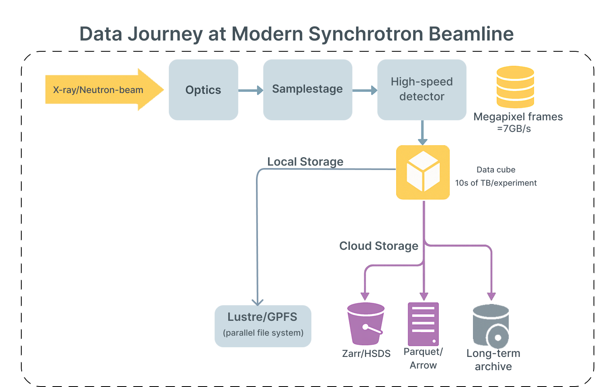

- Modern beamlines stream multi‑GiB/s, turning single experiments into multi‑TB datasets.
- Parallel file systems deliver throughput, but thousands of small reads suffer.
- S3 scales, yet per‑request latency and request cost become visible.
- Need a side‑by‑side, cloud‑native evaluation for slice latency vs full-scan throughput.
Goal: Identify storage + codec choices that reduce interactive latency while sustaining scan throughput.

Beamline pipelines generate high‑volume, latency‑sensitive data flows.